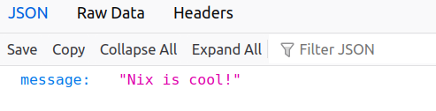

This template builds a simple Docker image, containing Python,
the Python package FastAPI for defining our
api endpoints and the Uvicorn webserver. We place
the files default.nix and main.py into a new folder together and run
nix-build to create the Docker image. The resulting docker image can
then be found in the result symlink that is creating during building.
# default.nix
{
system ? builtins.currentSystem,
nixpkgs ? (fetchTarball
"https://github.com/NixOS/nixpkgs/archive/057f9aecfb71c4437d2b27d3323df7f93c010b7e.tar.gz"),
isDev ? false
}:
let
pkgs = import nixpkgs {
inherit system;
config = {};
overlays = [];
};
isNix = path : let
file = baseNameOf path;
suffixMatch = builtins.match "^.*(\\.nix)$" file;
in
suffixMatch != null;
pathsToFilter = map builtins.toString [
./result # a previous nix-build derivation result
];
toFilter = path : type : !(
isNix path ||
builtins.any (x : x == builtins.toString path) pathsToFilter
);
# Pack the source code into a derivation. This is then
# put into the /app directory in the docker image.
app = pkgs.stdenv.mkDerivation rec {
name = "api-code";
src = builtins.path {
name = "${name}";
# He we take all source files in the currenty directory
# that aren't listed in pathsToFilter or end in .nix.
path = builtins.filterSource toFilter ./.;
};
buildPhase = "";
# The source files are put into the a folder called `app`
installPhase = "mkdir -p $out/app && cp -rT $src $out/app";
};
# The python packages and interpreter required to run
# our application
python = pkgs.python311.withPackages (ps: [
ps.fastapi
ps.uvicorn
]);
webserverPort = "5000";
in
pkgs.dockerTools.buildImage {
name = "simple-python-api";
tag = "latest";
copyToRoot = pkgs.buildEnv {
name = "image-root";
paths = [
app
python
] ++ (
# Just for the case we want to to run bash
# within the docker container
if isDev then [
pkgs.bashInteractive
pkgs.coreutils
] else [ ]
);
# From each derivation listed in paths, merge all items
# in a top-level app folder into /app and all in a top-
# level bin folder into /bin
pathsToLink = [ "/app" "/bin" ];
};
runAsRoot = ''
mkdir -p /app
'';
config = {
# It is important arguments are separated
Cmd = [ "uvicorn" "main:app" ];
# Set environment variables
Env = [
"UVICORN_HOST=0.0.0.0"
"UVICORN_PORT=${webserverPort}"
];
# This is more for documentation purposes.
# Still need to add -p during docker run.
ExposedPorts = {
"${webserverPort}/tcp" = {};
};
# Directory that Cmd starts in.
WorkingDir = "/app";
Volumes = {
"/app" = {};
};
};
}We could have chosen a directory other than /app by changing each place it
occurs in the nix file above.
Our simple API just returns "Nix is cool!" at its root path.
# main.py
from fastapi import FastAPI
app = FastAPI()
@app.get("/")
async def root():
return {"message": "Nix is cool!"}We build and load the docker image in order to start it.
$> nix-build
$> docker load < result
12bf1bf86c45: Loading layer [==================================================>] 266.7MB/266.7MB
Loaded image: simple-python-api:latestWe then start the image, ensuring we publish the webserver port.
$> docker run -p 5000:5000 --rm simple-python-api
INFO: Started server process [1]
INFO: Waiting for application startup.
INFO: Application startup complete.
INFO: Uvicorn running on http://0.0.0.0:5000 (Press CTRL+C to quit)Opening http://localhost:5000 we see the result of the api call.
This looks something like:

Or we can use curl:
$> curl localhost:5000
{"message":"Nix is cool!"}We can instead build the image with bash, enabling us to access the machine
directly. This includes the bashInteractive and coreutils packages. The
image size is now slightly larger than before.
$> nix-build -E 'with (import <nixpkgs>{}); callPackage ./default.nix { isDev = true; }'
$> docker load < result
b15bfaf0bce1: Loading layer [==================================================>] 276.6MB/276.6MB
Loaded image: simple-python-api:latestThen we can jump into the machine and see what is in our /app directory, and
what was copied from the nix store into the /nix directoy.
$> docker run -it --rm simple-python-api bash
bash-5.2# ls -lsh
total 1.0K
1.0K lrwxrwxrwx 1 0 0 64 Jan 1 1980 main.py -> /nix/store/gb7q1c8326pp8wdyidz823q53fhsny8z-api-code/app/main.py
bash-5.2# ls -lsh /app
total 1.0K
1.0K lrwxrwxrwx 1 0 0 64 Jan 1 1980 main.py -> /nix/store/gb7q1c8326pp8wdyidz823q53fhsny8z-api-code/app/main.py
bash-5.2# cd /nix/store
bash-5.2# du -sh -- * | sort -h | tail -5
9.2M ljd22jdzx6kj0hj7wsnhr71gqa4iqj88-python3.11-pygments-2.16.1
11M 5i51nfixxx3p3gshkfsjj4bzp7wajwxz-ncurses-6.4
20M qn3ggz5sf3hkjs2c797xf7nan3amdxmp-glibc-2.38-27
22M bnj3s9ylv33g6h9r8br8dyxvvksscxxv-python3.11-babel-2.12.1
84M qp5zys77biz7imbk6yy85q5pdv7qk84j-python3-3.11.6There are more examples evailable in the nixpkgs repository here.
The entries within the config section of dockerTools.buildImage follow the
specification here.
See also the official nix.dev page for more information.
For thoughts on reducing docker image sizes, see this page.